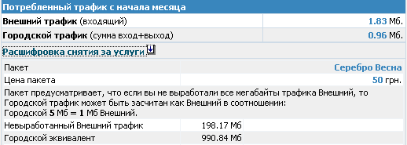

| Биллинговая система NoDeny. Тарификация |
Вступление
Тарификация - это та часть биллинга, которая является наиболее индивидуальной в любой сети. Из-за всего многообразия требований разных сетей, тарификация изобилует большим количеством понятий, в которые вам прийдется вникнуть чтобы получить требуемый результат.
I. ТИПЫ ТРАФИКА
Вполне очевидно, что трафик, полученный/отправленный абонентами сети, как минимум, должен разделяться на 2 категории: неоплачиваемый и оплачиваемый. К примеру, трафик получения статистики, авторизации и т.д. - это неоплачиваемый трафик. Трафик полученный с локальных серверов сети тоже может быть неоплачиваемым (но не обязательно). Кроме того, как показывает практика, оплачиваемый трафик часто имеет разную стоимость в зависимости от некоторых факторов. К примеру, городской трафик (российский, мировой - подставьте свое название) у многих провайдеров тарифицируется по различной цене. В простейшем случае, некоторые сети всему трафику интернет назначают единую цену, поэтому у них возникает ощущение избыточности системы NoDeny. Поскольку требования у разных сетей совершенно разные, необходимо настроить систему «под себя». Поэтому прежде предлагается рассмотреть ситуацую реально существующей сети.
В сети ХХХ имеется доступ в интернет. Вышестоящий провайдер предоставляет доступ к своим ресурсам по сниженному тарифу и по более высокой стоимости в интернет. Таким образом, при оценке полученного клиентом трафика необходимо разделить его (трафик) на «провайдерский» и «мировой», и дать различную стоимость. Далее, у сети есть почтовый сервер, почтовый трафик полученный клиентами необходимо тарифицировать по более низкой стоимости. Для привлечения клиентов сеть делает акцию «игры на игровых серверах ААА, БББ и ССС тарифицируются всего за хх коп/Мб». Итого у нас 4 различных класса трафика (далее направления). К вам подключена «дружественная сеть», вы хотите тарифицировать трафик закаченных фильмов? Это еще одно направление. Итак, деление трафика на направления это то, с чем вы обязательно столкнетесь.
Далее приведены ключевые определения NoDeny в терминологии автора:
- Направление - категория трафика, описываемая определенной совокупностью сетей, а также портов. В простейшем случае может быть представлена всего одним ip-адресом. Синонимом «направления» является класс трафика. Понятие «направление» используется автором для обозначения категории трафика по имени, а «класс» - по номеру. Например, «городской трафик» - это направление, он же является классом № 3.
- Пресет - группирует направления в один блок. Номер используемого пресета указывается в конкретном тарифе, и для этого тарифа во всех вычислениях используются описания направлений, присутствующие именно в этом пресете. Для чего это необходимо? Пресеты предназначены для ситуаций, когда в разных тарифных планах участвуют разные тарифицируемые направления. Скажем, в пакете «серфер» вы используете направления «www-ресурсы» (трафик на 80й порт), «ftp-ресурсы», «игровые ресурсы» (порт 27016 КС серверов). Совершенно очевидно, что для других тарифных планов, которые не предусматривают такую классификацию трафика, а делят его, скажем, на «мировой» и «городской», должны использоваться иные описания направлений.
Пресеты могут понадобиться когда на единой биллинговой системе работают разные сети со своими тарифами и направлениями.
Отдельно отметим так называемый нулевой пресет - это пресет, который условно считается описывающим реальные направления. Поясним. Допустим, у вас есть 2 канала: в зону обмена трафиком и в интернет. На основе этого создаете тарифы с этими двумя направлениями. В определенный момент к вам подключается корпоративный заказчик и вы планируете не использовать разделения трафика для этого клиента. Например, весь трафик считать как «интернет». Однако, это исказит реальную статистику, которую вы будете наблюдать в админке - как минимум, загрузка каналов не будет соответствовать действительности. Поэтому наилучшим вариантом было бы создание нулевого пресета с описанием реальных направлений, а для корпоративного клиента задействовать иной пресет.
В простейшем случае, если вас не интересует такая глубина разделений трафика, вам понадобится всего один пресет - нулевой.
Понимание перераспределения трафика. При определенной настройке возможна ситуация когда у клиента имеется трафик такой категории, которая отсутствует в его пакете тарификации. Такая ситуация может возникнуть при переводе с пакета, имеющего иные направления тарификации, либо когда в пакете тарификации указан пресет с избыточными направлениями. В этом случае система всегда перераспределяет трафик с незадействованных направлений на первое по счету направление. Таким образом, если, скажем, пакет тарификации клиента предусматривает разделение трафика на «трафик X» (класс 1) и «трафик Y» (класс 2), и при этом в его статистике будет фигурировать трафик класса 3, то последний будет логически перераспределен на «трафик X». Желательно избегать таких ситуаций путем более корректной настройке системы, тем не менее перераспределение нормальная операция и при понимании администратором принципа перераспределения - абсолютно корректная.
На данный момент имеется возможность разделять трафик на 4 оплачиваемых и 4 неоплачиваемых направления на один пакет тарификации. Неоплачиваемые направления только учитываются в статистике, тарификация по ним не происходит. В неоплачиваемые направления можно занести локальные сети, тогда будет храниться статистика по обмену трафика между клиентами (если этот трафик проходит через маршрутизатор, т.е. межсегментный трафик)
Направления, как уже было сказано, описываются в пресетах. Существование направления определяется такими показателями:
- у него есть название и/или
- в описании направлений есть хотя бы одна сеть данного класса
При присутствии второго пункта и отсутствии первого, название направлению назначается как «Направление № класс направления», например, «направление №3». Другими словами, если не указано, что у класса №3 есть имя, то его имя будет «направление №3».
Любому клиенту (даже если он заблокирован, линия на консервации, он админ, сервер и т.д.) назначается пакет, на основании которого в конце месяца происходит списания средств со счета. В каждом пакете может быть назначено свое колличество оплачиваемых категорий трафика. К примеру, у нас есть 4 категории трафика: внешний, городской, внешний ночной, городской ночной. Для обычных клиентов мы можем разделять потребленный трафик на все 4 категории, для других же (например, для корпоративных, либо анлимитчиков) мы можем разделять только на внешний или город, либо вообще не разделять трафик и считать все мировым.
Для каждой категории трафика можно назначить «предоплаченный трафик». Предоплаченный трафик - это трафик, стоимость которого уже включена в стоимость пакета. Например, если предоплаченный трафик категории «городской» равен 100, то клиент может скачать до 100 Мб городского трафика и при этом с него будет снята только стоимость пакета. Параметр «стоимость превышения» указывает на стоимость каждого мегабайта превышения предоплаченных мегабайт для данной категории трафика. В простейшем случае, если у нас стоит задача продавать трафик клиенту по 1руб/Мб, то предоплаченный трафик устанавливается в ноль, а «превышение» в 1 руб. Т.о. с клиентского счета будет сниматься ровно столько рублей, сколько он потребил мегабайт.
Безлимитные тарифы указываются установкой предоплаченного трафика в значение `!` (восклицательный знак), в результате везде будет фигурировать не предоплаченный трафик, а слово «безлимитный». Обязательно установите цену переработки в ненулевое значение если № направления >1 - в противном случае направление будет перераспределено на направление №1. В клиентской статистике в безлимитных пакетах цена переработки не будет отображаться
Для того чтоб указать, что в данном пакете не требуется разделять трафик на какую-либо категорию, необходимо установить параметр «стоимость превышения» в ноль. Когда клиентский трафик превысит предоплаченный и при этом стоимость превышения будет равна нулю, то клиент по сути мог бы потреблять бесплатно трафик - решено было сделать нулевое превышение признаком отключения данной категории трафика для данного пакета. Трафик, логически попадающий в эту категорию, будет добавляться к первой категории. В первой категории нулевое превышение означает, что при достижении границы предоплаченных мегабайт клиенту будет заблокирован доступ, т.е это своеобразный лимит который клиент не превысит даже если на его счету будет наличность.
Обратите внимание, что перераспределить одно направление на другое можно и другим способом: создав пресет, где в описании сетей будет отсутствовать перераспределяемое направление.
Свойство пакета «отношение направление2/направление1». Пакетный режим предусматривает оплату полной стоимости пакета в независимости от того будет ли он полностью использован или частично. Обычно направлению 1 назначают наибольшую стоимость. При неполном использовании трафика направления 1 имеется возможность условно засчитать ПРЕВЫШЕНИЕ трафика направления 2 как трафик направления 1 в заданном соотношении. Например, параметр «отношение» равен 4, пакет имеет цену 50 руб и в него включено предоплаченных 100 Мб направления 1 и 200 МБ направления 2.
Клиентский трафик: 70 Мб направления 1 и 400 МБ - направления 2.
Видно, что клиент «недоработал» 30 МБ первого направления (например трафик в интернет). Эти мегабайты условно переводятся в мегабайты направления 2 (например это дешевый городской трафик) в соотношении 4 к 1 (см. выше), т.е. 30 * 4 = 120 Мб. Таким образом, условно считается, что клиент выработал все внешние мегабайты и 400-120 = 280 мб - это его потребление направления 2. При дальшейшем потреблении мегабайт направления 1 автоматически происходит пересчет направления 2
Более наглядного объясняет такая фраза: «В данном пакете вы можете скачать 200 внешних мегабайт либо 1000 городских»:

II. Схема пересчета трафика в денежный эквивалент
Подсчетом трафика клиента занимается ядро NoDeny - скрипт nodeny.pl, который периодически обращается к коллекторам трафика, после чего анализирует информацию, разделяя ее на направления в зависимости от того пресета, который указан в пакете тарификации клиента. Кроме определения категории трафика, ядро разделяет трафик на направления движения: от клиента/к клиенту. Эти данные записываются в учетную запись клиента. При подсчете денежной суммы эквивалентной потребленному трафику, извлекаются данные трафика из учетной записи клиента, после чего на основе пакета тарификации происходит определение какую составляющую трафика оценивать: принятый трафик, отправленный, суммарный или наибольшую составляющую. Для каждого направления оцениваемый таким образом трафик может быть разным. Следующим этапом происходит перераспределение трафика с незадействованных направлений на основное (если незадействованные направление присутствуют в данном тарифе). По завершению этой процедуры, определяется в каких категориях трафика произошло превышение предоплаченных мегабайт. Величина превышения умножается на стоимость трафика превышения данной категории. Итоговое значение стоимости трафика является суммой стоимости пакета плюс стоимости превышения всех категорий трафика
III. НАСТРОЙКА
Настройка осуществляется в веб-администрировании на страницах «Операции» → «Настройки» → «Направления» и «Операции» → «Тарифы».
IV. ПРИМЕРЫ НАСТРОЙКИ
Меню «Тарифы» в веб-администрировании.
а) необходимо создать 3 пакета:
1й - 50Мб стоимостью 30руб, разделение трафика на внешний/город не осуществлять, при превышении 50мб каждый Мб считать по 50 коп
2й - 100мб стоимостью 50руб, при превышении - 48коп/мб, предоплаченный городской трафик 333Мб, при превышении городских 333мб - 5 коп/мб
3й - 1Гб за 100руб, при превышении - произойдет отключение. Т.е. как только клиент израсходует этот 1Гб доступ в интернет будет заблокирован
Заносим в таблицу тарифов пакетного режима следующие значения:
| Название пакета | Мб в пакете | Мб городского трафика | Цена | Цена превышения | Цена превышения городского |
| Пакет 1 | 50 | 0 | 30 | 0.5 | 0 |
| Пакет 2 | 100 | 333 | 50 | 0.48 | 0.05 |
| Пакет 3 | 1000 | 0 | 100 | 0 | 0 |
Обратите внимание: установка цены превышения городского трафика в ноль указывает на то, что разделение на город/внешний в данном пакете происходить не будет.
Установка цены превышения внешнего трафика в ноль указывает на блокировку доступа в инет при превышении пакетных мегабайт
б) необходимо создать пакет когда трафик считается по фиксированной цене 0.55 коп за Мб:
| Название пакета | Мб в пакете | Мб городского трафика | Цена | Цена превышения | Цена превышения городского |
| Стандарт | 0 | 0 | 0 | 0.55 | 0 |